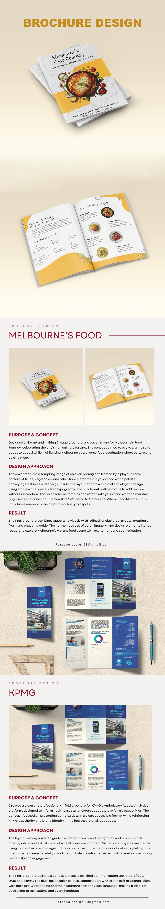

Design approach
Inside pages use open space, clean typography and subtle botanical details to keep the dining guide inviting and easy to scan.
Editorial design
Two distinct brochure concepts: a warm invitation to explore Melbourne’s food culture and a clear, data-led introduction to healthcare analytics.
01 / MELBOURNE’S FOOD JOURNEY
The two-page brochure frames Melbourne as a destination shaped by food and culture. A chicken parmigiana cover image, playful produce illustrations and a yellow-and-white palette bring warmth and appetite to the concept.
Inside pages use open space, clean typography and subtle botanical details to keep the dining guide inviting and easy to scan.
A cohesive brochure system connects the cover to the food guide and carries the theme of Melbourne’s culinary diversity throughout.
02 / KPMG AMBULATORY ACCESS ANALYTICS
The tri-fold introduces KPMG’s Ambulatory Access Analytics platform to healthcare stakeholders. Its blue visual system reinforces the professional context while making room for detailed information.
Brand, healthcare imagery, icons and charts create a clear reading path through the platform’s capabilities and supporting data.
The final brochure balances detailed content with visual cues to make the information easier to navigate in client and event settings.
